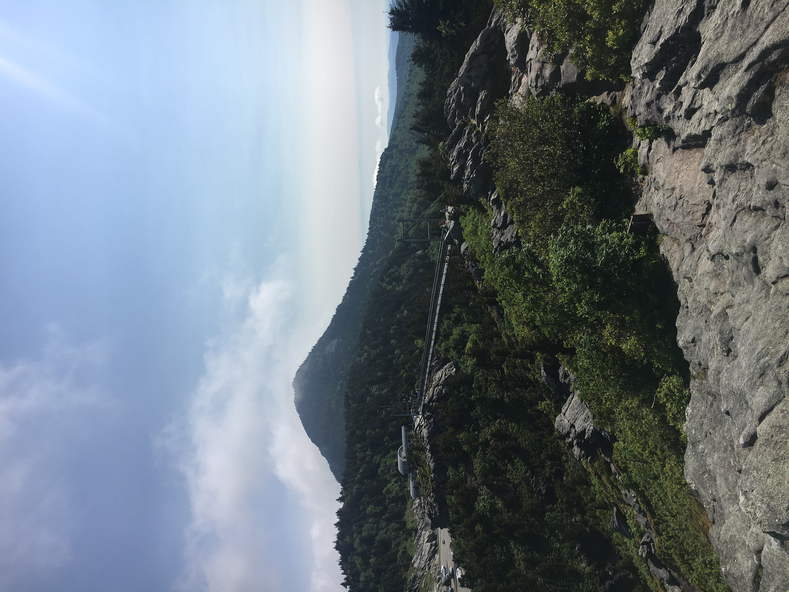
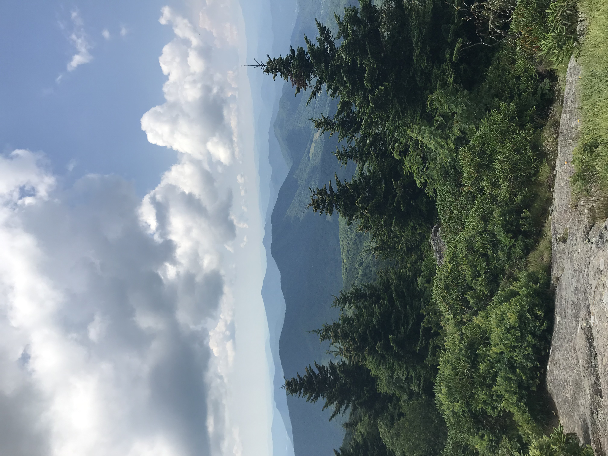
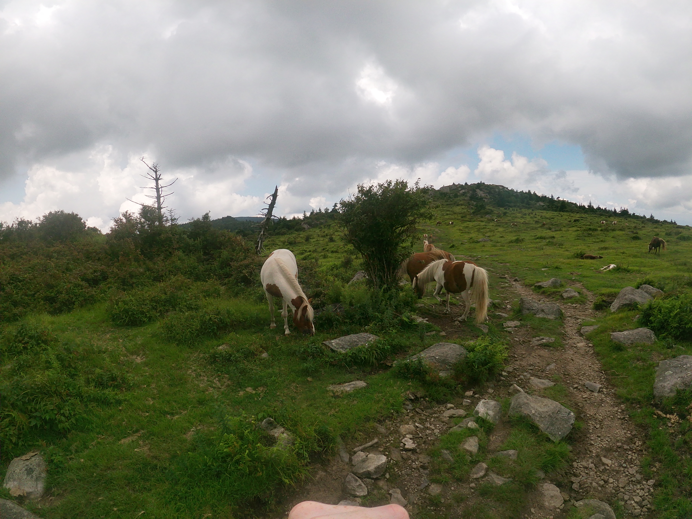
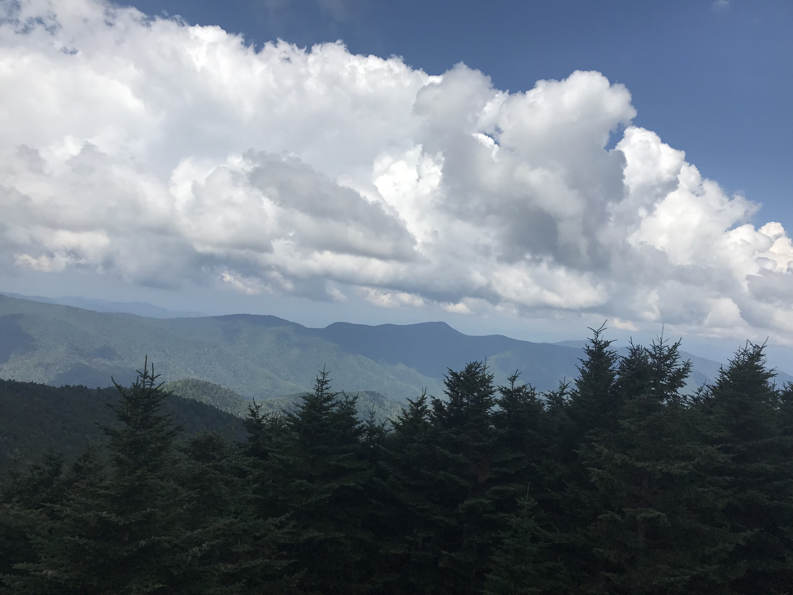
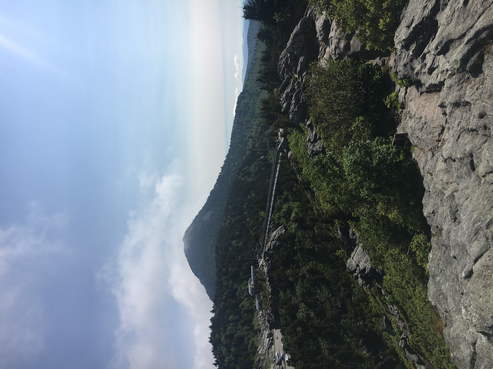
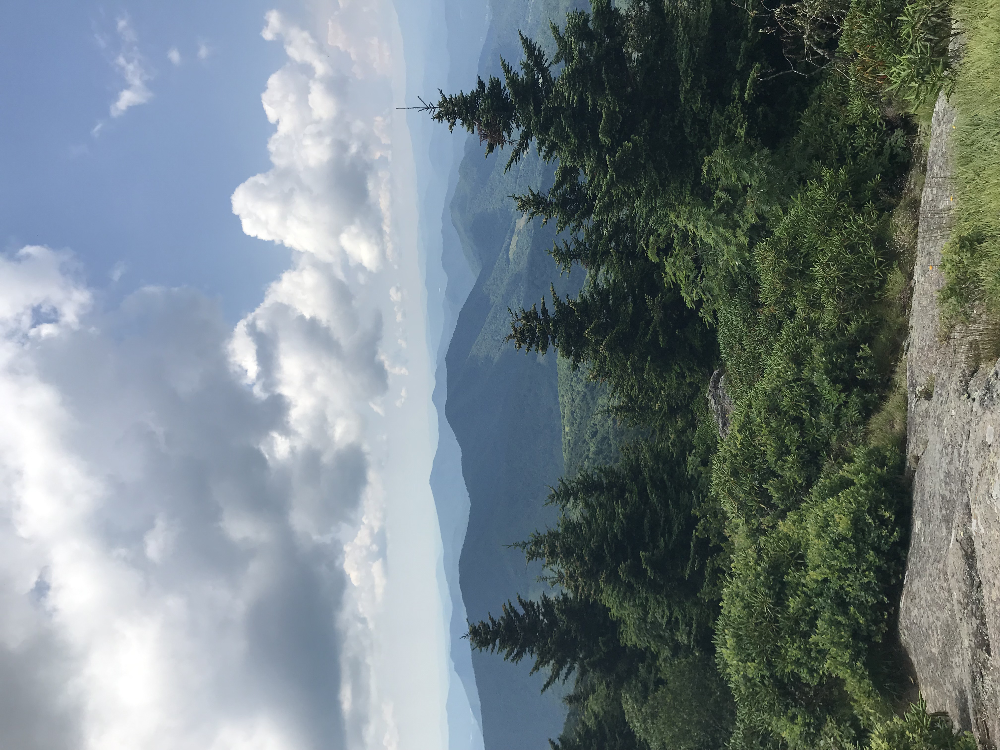
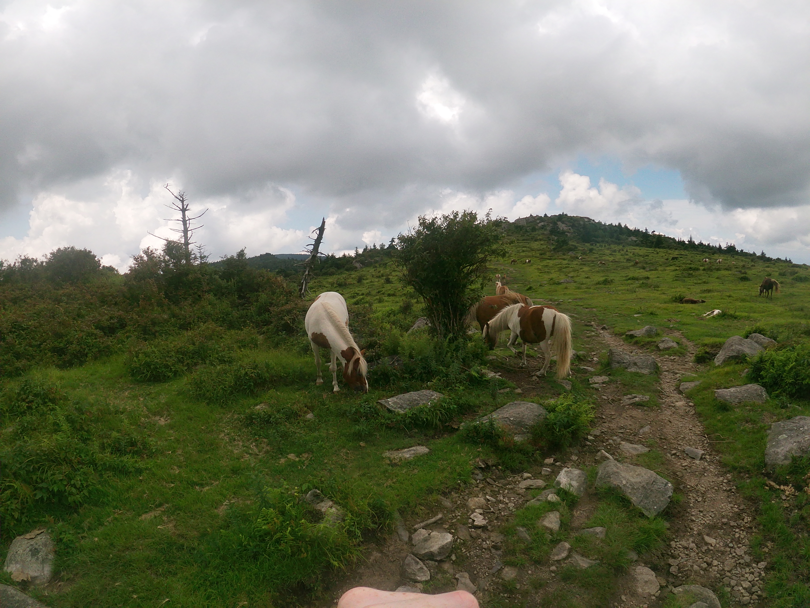
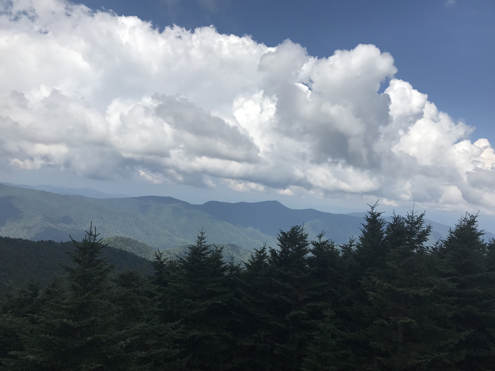

Quote of the Day
Not all those who wander are lost.
- J.R.R. Tolkien
We're so glad you're here! From Maine to Florida—and everywhere in between—adventurEAST is excited to share all the East Coast has to offer from an outdoor adventure perspective!
Not all those who wander are lost.
- J.R.R. Tolkien
 






